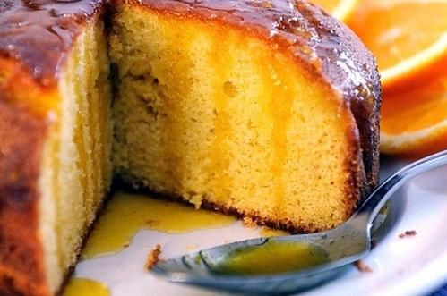

BLOG DE RECETAS DE COCINA
Receta de torta de Naranja

Rica y fácil. Esta receta de torta de naranja es apta para todos los niveles, y es que su única dificultad reside en batir las claras de huevo a punto de nieve. Al no contener ningún tipo de licor, el bizcocho casero que Maria Moreno comparte en RecetasGratis.net es perfecto para conseguir que los más pequeños se aprovechen de todos los beneficios de la naranja, como su elevado contenido en vitamina C, fibra, propiedades antioxidantes y depurativas.
INGREDIENTES
- Harina
- Naranjas
- Azúcar
- Huevos
- Manteca
PASO A PASO
- Para empezar a preparar la masa de la torta de naranja, se debe batir las claras a punto de nieve. Luego en u bol aparte batir las yemas, agregar el azúcar y seguir batiendo.
- Después, se debe agregar la harina y mezclar con una espátula o cuchara. Se exprime el jugo de las tres naranjas y se vierte en la masa. Añadir el aceite y mezclar.
- Luego se añade la clara batida a punto de nieve y se mezcla haciendo movimientos envolventes. Una vez obtenida la masa de naranja, se engrasa el molde, se vierte la preparación y se hornea el bizcocho casero a temperatura moderada durante 30 minutos aproximadamente.
- ¡Listo! Se deja enfriar para desmoldar y se decora con rodajas de naranja caramelizadas, chocolate fundido o azúcar glass. Esta torta de naranja es muy fácil y es perfecta tanto para la hora del postre como la merienda o el desayuno.
Volver a la página de inicio